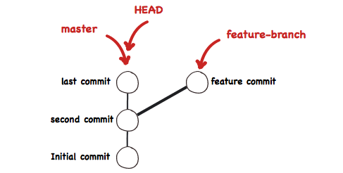

以上包括一些简单而常用的命令，但是先不关心这些，先来了解下面这4个专有名词。
Workspace：工作区
Index / Stage：暂存区
Repository：仓库区（或本地仓库）
Remote：远程仓库程序员进行开发改动的地方，是你当前看到的，也是最新的。
平常我们开发就是拷贝远程仓库中的一个分支，基于该分支进行开发。在开发过程中就是对工作区的操作。
.git目录下的index文件, 暂存区会记录 git add 添加文件的相关信息(文件名、大小、timestamp…)，不保存文件实体, 通过id指向每个文件实体。可以使用 git status 查看暂存区的状态。暂存区标记了你当前工作区中，哪些内容是被git管理的。
当你完成某个需求或功能后需要提交到远程仓库，那么第一步就是通过 git add 先提交到暂存区，被git管理。
保存了对象被提交 过的各个版本，比起工作区和暂存区的内容，它要更旧一些。
git commit 后同步index的目录树到本地仓库，方便从下一步通过 git push 同步本地仓库与远程仓库的同步。
远程仓库的内容可能被分布在多个地点的处于协作关系的本地仓库修改，因此它可能与本地仓库同步，也可能不同步，但是它的内容是最旧的。
任何对象都是在工作区中诞生和被修改；
任何修改都是从进入index区才开始被版本控制；
只有把修改提交到本地仓库，该修改才能在仓库中留下痕迹；
与协作者分享本地的修改，可以把它们push到远程仓库来共享。下面这幅图更加直接阐述了四个区域之间的关系，可能有些命令不太清楚，没关系，下部分会详细介绍。
网上找了个图，别人整理的一张图，很全很好，借来用下。下面详细解释一些常用命令。

在掌握具体命令前，先理解下HEAD。
HEAD，它始终指向当前所处分支的最新的提交点。你所处的分支变化了，或者产生了新的提交点，HEAD就会跟着改变。
add相关命令很简单，主要实现将工作区修改的内容提交到暂存区，交由git管理。
git add . 添加当前目录的所有文件到暂存区
git add [dir] 添加指定目录到暂存区，包括子目录
git add [file1] 添加指定文件到暂存区commit相关命令也很简单，主要实现将暂存区的内容提交到本地仓库，并使得当前分支的HEAD向后移动一个提交点。
git commit -m [message] 提交暂存区到本地仓库,message代表说明信息
git commit [file1] -m [message] 提交暂存区的指定文件到本地仓库
git commit —amend -m [message] 使用一次新的commit，替代上一次提交涉及到协作，自然会涉及到分支，关于分支，大概有展示分支，切换分支，创建分支，删除分支这四种操作。
git branch 列出所有本地分支
git branch -r 列出所有远程分支
git branch -a 列出所有本地分支和远程分支
git branch [branch-name] 新建一个分支，但依然停留在当前分支
git checkout -b [branch-name] 新建一个分支，并切换到该分支
git branch —track [branch][remote-branch] 新建一个分支，与指定的远程分支建立追踪关系
git checkout [branch-name] 切换到指定分支，并更新工作区
git branch -d [branch-name] 删除分支
git branch -D [branch-name] 强制删除
git push origin —delete [branch-name] 删除远程分支merge命令把不同的分支合并起来。如上图，在实际开放中，我们可能从master分支中切出一个分支，然后进行开发完成需求，中间经过R3,R4,R5的commit记录，最后开发完成需要合入master中，这便用到了merge。
git fetch [remote] merge之前先拉一下远程仓库最新代码
git merge [branch] 合并指定分支到当前分支一般在merge之后，会出现conflict，需要针对冲突情况，手动解除冲突。主要是因为两个用户修改了同一文件的同一块区域。
rebase又称为衍合，是合并的另外一种选择。
在开始阶段，我们处于new分支上，执行git rebase dev，那么new分支上新的commit都在master分支上重演一遍，最后checkout切换回到new分支。这一点与merge是一样的，合并前后所处的分支并没有改变。git rebase dev，通俗的解释就是new分支想站在dev的肩膀上继续下去。rebase也需要手动解决冲突。
rebase与merge的区别
现在我们有这样的两个分支，test和master，提交如下：
D—-E test
/
A—-B—-C—-F master
在master执行git merge test,然后会得到如下结果：
D————E
/ \
A—-B—-C—-F——G test, master
在master执行 git rebase test，然后得到如下结果：
A—-B—-D—-E—-C’—-F’ test, master
可以看到，merge操作会生成一个新的节点，之前的提交分开显示。而rebase操作不会生成新的节点，是将两个分支融合成一个线性的提交。
如果你想要一个干净的，没有merge commit的线性历史树，那么你应该选择git rebase 如果你想保留完整的历史记录，并且想要避免重写commit history的风险，你应该选择使用git merge。
reset命令把当前分支指向另一个位置，并且相应的变动工作区和暂存区。
git reset —soft [commit] 只改变提交点，暂存区和工作目录的内容都不改变
git reset —mixed [commit] 改变提交点，同时改变暂存区的内容
git reset —hard [commit] 暂存区、工作区的内容都会被修改到与提交点完全一致的状态
git reset —hard HEAD 让工作区回到上次提交时的状态git revert用一个新提交来消除一个历史提交所做的任何修改。
git revert是用一次新的commit来回滚之前的commit，git reset是直接删除指定的commit。
在回滚这一操作上看，效果差不多。但是在日后继续merge以前的老版本时有区别。因为git revert是用一次逆向的commit“中和”之前的提交，因此日后合并老的branch时，导致这部分改变不会再次出现，减少冲突。但是git reset是之间把某些commit在某个branch上删除，因而和老的branch再次merge时，这些被回滚的commit应该还会被引入，产生很多冲突。
git reset 是把HEAD向后移动了一下，而git revert是HEAD继续前进，只是新的commit的内容和要revert的内容正好相反，能够抵消要被revert的内容。
上传本地仓库分支到远程仓库分支，实现同步。
git push [remote][branch] 上传本地指定分支到远程仓库
git push [remote] —force 强行推送当前分支到远程仓库，即使有冲突
git push [remote] —all 推送所有分支到远程仓库git status 显示有变更的文件
git log 显示当前分支的版本历史
git diff 显示暂存区和工作区的差异
git diff HEAD 显示工作区与当前分支最新commit之间的差异
git cherry-pick [commit] 选择一个commit，合并进当前分支参考文章 https://mp.weixin.qq.com/s/FM-wcjd0WT84spIbLuiIaw
[1] https://mp.weixin.qq.com/s/FM-wcjd0WT84spIbLuiIaw: https://mp.weixin.qq.com/s/FM-wcjd0WT84spIbLuiIaw